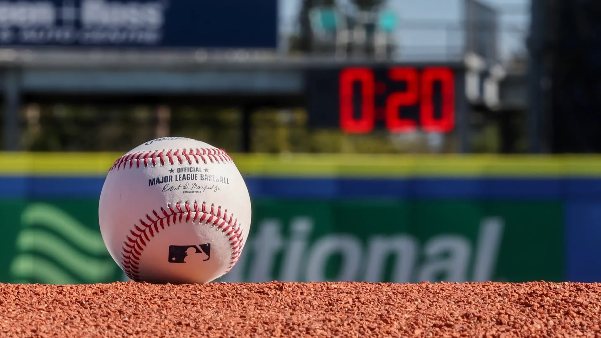

Introduction
If you’ve paid any mind to Major League Baseball (MLB) over the last decade, you would know the abundance of rule changes that have been employed and the many discussions that have encompassed the subject. Baseball has a very rich history which dates all the way back to the 1830s, and in nearly two centuries worth of the game, there have been a few changes that influence the overall gameplay. In recent years though, there have been more adjustments that were made to make the game more engaging for watchers because of a lessening in fan interest, participation, and in general viewership. The number of viewers has steadily decreased from 1992, falling nearly from 22 million to only 7.5 million in 2022. One could argue that “America’s Pastime” was dying.
Photo by Mike Carlson/MLB Photos via Getty Images
What is the Pitch Clock?
Implemented in 2023, the pitch clock was a tool created to reduce the amount of time between pitches for both pitchers and hitters to deliver and hit, in ultimate hopes of an overall quicker pace of play. The pitch clock rule went into effect for the first time in all minor leagues in 2022. With this standard change, pitchers are given 30 second pitch clocks between batters, 20 second pitch clocks between pitches while runners on base, or 15 seconds between pitches if there are no runners on base. Pitchers, as a result, have less time to deliver pitches and on the other side of the ball--hitters now have less time to hit those pitches. If a pitcher violates this rule, the batter is awarded a ball, but if the batter is not ready with 8 seconds left in the pitch clock, the pitcher is awarded a strike.
A New Look to the Game
The first dataset tested in this research is pulled from the Baseball Savant database, which is website that offers analytical statistics, Statcast measures, and player/team advanced metrics. Similar data. from the minor leagues is how Major League Baseball eventually led them to implement this rule. This analysis focuses on all MLB qualified players who pitched in the most recent full 162-game season without a pitch clock (2022) and first full 162-game season with the pitch clock (2023).

Amongst the qualifying pitchers in 2022, the average wait between pitches with bases empty was 18.3 seconds (this included the interval between batters). Implementing the new pitch timer caused a dip all the way to 15.4 in 2023. When runners were on base, there was a similar percentage change. This time however, instead of a three, it was a four-second drop between pitches dropping (23.2 to 19.1) Even with the gap between the two seasons from ’22 and ’23 being just a couple seconds, the average pitch pace dropped from 20.1 to 16.8 seconds, or 3.3 seconds per pitch.
Pro Perspective of the Pitch Clock
Following the pitch clock's inaugural season, even with the substantial change and potential for increased punishment, the pitch clock didn't showcase to be very detrimental in terms of infractions. In the 2,400 plus regular season games played in 2023, pitchers and batters didn’t even see half an infraction per contest. Despite some early worries and woes in spring training, the number of violations continually decreased as the season progressed; likely a difference in comfortability with the rule adjustment.
Just as the pitch clock got its inevitable call-up to the majors in 2023, Former New York Mets Bench Coach Dick Scott got his first taste of the pitch clock ironically when he got the nod as the manager for the Triple-AAA Syracuse Mets. Even as someone whose been around the game for 40 plus seasons in the minor and major leagues, Scott, while not the pitching coach, is impressed with how these staffs have made the quick adjustment to the new reality of the game.
"It's been pretty remarkable to witness how quickly [pitchers] have adapted to [the pitch clock]," Scott remarked. "Because the pitch clock sets the pace…games have a very noticeable increase in tempo and flow, which can be a challenge…baseball is so methodical."
Since the minor leaguers have experienced this new system for upwards of three seasons, the pitch clock has become an afterthought in a sense; with no consistent disruptions to routines.
"With [the pitch clock] being at the big league level now, that’s one less thing [for pitchers] to have to adjust.” Scott mentioned. “It’s never going to satisfy everybody, but at the end of the day these guys are here to play and that’s what they’re going to do.”
The Pitch Clock has Trimmed almost half an hour from the length of games
The lengthening of games has been by far the biggest impact that the pitch timer has brought to baseball. This previous year's average nine-inning game lasted two hours and 42 minutes. Compare that to a lengthy three hours and three minutes last year, according to Baseball Reference Baseball Reference In fact, the last time games were this short, was all the way back in 1984.

While not present on the graph, to put the significant change in perspective: There were under double-digit games that lasted 3½-hours or more in 2023. For reference, there were nearly 400 of them in 2021.
During the 2022 season, MLB advertised advertised “the average length of a minor league game through May 11 was 2 hours, 35 minutes—that’s a full 28 minutes faster than the 3-hour, 3-minute average of minor league games without the pitch clock in 2021”. Just a year later, MLB enforced the pitch clock with its players taking note of these similar effects:
"[The pitch clock] took some getting used to”, said Twins shortstop Carlos Correa. “[b]ut once you get used to it the game's a lot faster…”There's not wasted time”, he added. “The pace was great, so I think it's here to stay."
MLB Commissioner Rob Manfred made it clear in 2022 before these rules were implemented that the number one priority was a better pace of the game. Although it hasn’t come with some controversy, the benefits have been weighed both on-and-off the field.
"I think [the implementation has] gone smoothly," Dodgers catcher Will Smith noted. "It's nice for you to get home a bit earlier. You don't have the four-hour games anymore."
Conclusion
Despite significant shifts in gameplay time and tempo, the pitch clock hasn’t quantity of action in a game hasn't altered much. The success of that increased pace should have fans in anticipation for more rule adjustments in order to achieve the next steps Commissioner Manfred has in line. Baseball still wants to raise viewership to a higher level and wants to see an uptick in action as well. MLB is attempting to make games more interesting and engaging, and they'll probably keep up this technique in the years to come, even though these changes may not have had their immediate desired effect on the the sport’s viewing.